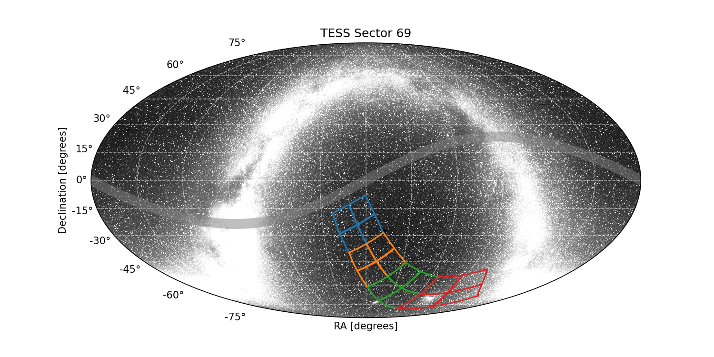

|
 |
Sector 69 Information
For full data release notes see: DRN96. For a list of TIC IDs with noted issues, see this list.
Sector Summary
Spacecraft Pointing (deg)
| RA | dec | roll | |
|---|---|---|---|
| Spacecraft | 20.04 | -54.23 | 222.77 |
| Camera 1 | 354.17 | -23.84 | 295.72 |
| Camera 2 | 8.57 | -44.78 | 304.0 |
| Camera 3 | 37.54 | -61.99 | 147.69 |
| Camera 4 | 92.95 | -65.32 | 198.11 |
Orbit Summary
| Orbits | Dates (UTC) Start - End |
Cadence # Start - End |
Momentum dumps |
|---|---|---|---|
| 145a | 2023-08-25 - 2023-08-31 | 1407524 - 1411725 | 1 |
| Engineering mode | 2023-08-25 - 2023-08-27 | 1407524 - 1408949 | |
| Observations resume | 2023-08-27 | 1408968 | |
| 145b | 2023-08-31 - 2023-09-07 | 1411876 - 1416627 | 1 |
| 146a | 2023-09-07 - 2023-09-14 | 1416779 - 1421322 | 1 |
| 146b | 2023-09-14 - 2023-09-20 | 1421474 - 1426092 | 1 |
Sector Notes
| Noted Issue | Description |
| Engineering tests: | At the beginning of the first orbit TESS performed engineering tests lasting ∼2 days. Five intervals during this time (lasting a total of ∼ 6.3 hr) where the spacecraft pointing was subject to impulses have the Manual Exclude (bit 8) data quality flag set in the 2-min and 20-sec data products. Data with Manual Exclude data quality flag are excluded for analysis in PDC, TPS, and DV. The FFI data products have the Manual Exclude data quality flag set during the entire duration of the 2 day engineering test because the FFIs were processed before the impact of the spacecraft pointing behavior was analyzed. Users can recover valid FFI data in the intervals given in Table 1 of DRN 96, which are consistent with the periods of good data in the 2-min and 20-sec data products. |
| Data gap: | After the 2 day engineering test, data collection was paused for 36 min in order to reconfigure the spacecraft for normal operations. During the reconfiguration duration, no data quality flags are set; however, there are no data collected during this time. Values in the target pixel files and light curves are set to NULL during the reconfiguration. |
| Corrupted data: | One FFI from Cameras 1 and 2 in orbit 145 was corrupted prior to downlink from the spacecraft and could not be recovered. The FFIINDEX number is 00849522, and no FFI file for Camera 1 and 2 was produced for this cadence. One FFI from Camera 1 in orbit 146 was corrupted prior to downlink from the spacecraft and could not be recovered. The FFIINDEX number is 00855522, and no FFI file for Camera 1 was produced for this cadence. |
| Spacecraft pointing: | The pointing in Sector 69 was set at −55.5 degrees in ecliptic latitude. During the 2 day engineering test, all cameras were used for guiding. After observations resumed, Camera 1 and Camera 4 were both used for guiding in Orbit 145a and 146a, while Camera 4 alone was used for guiding in Orbit 145b and 146b. |
| Scattered light: | In Sector 69 the Earth introduces scattered light signals at the end of each orbit. |